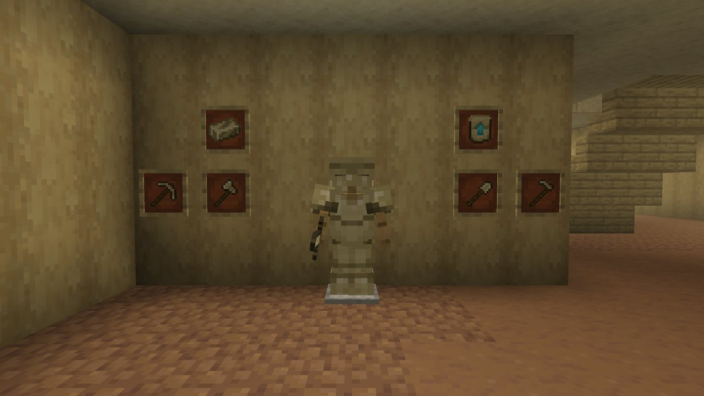
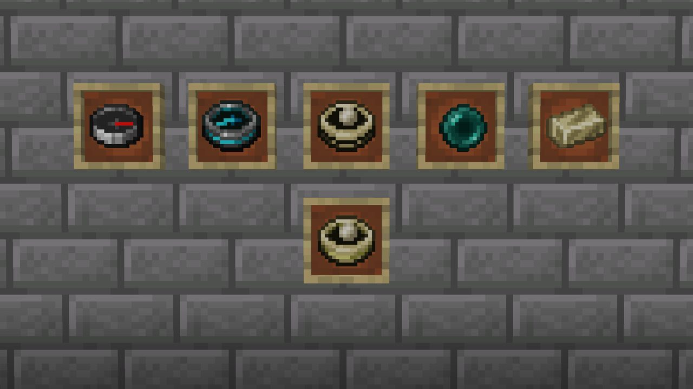
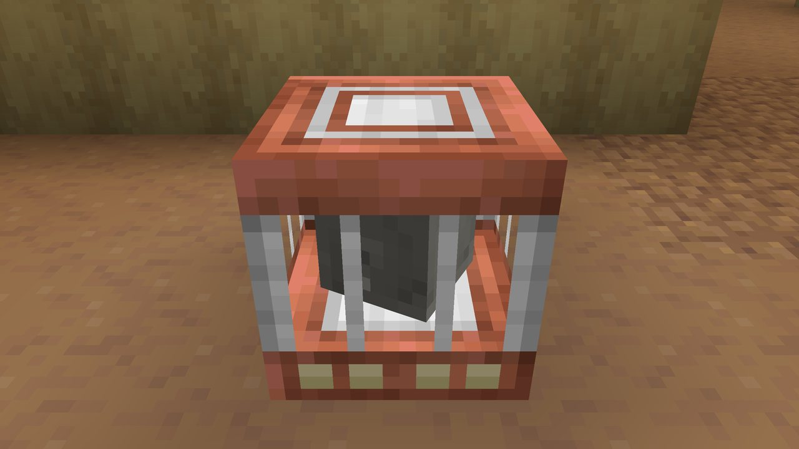
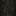
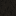
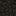
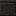
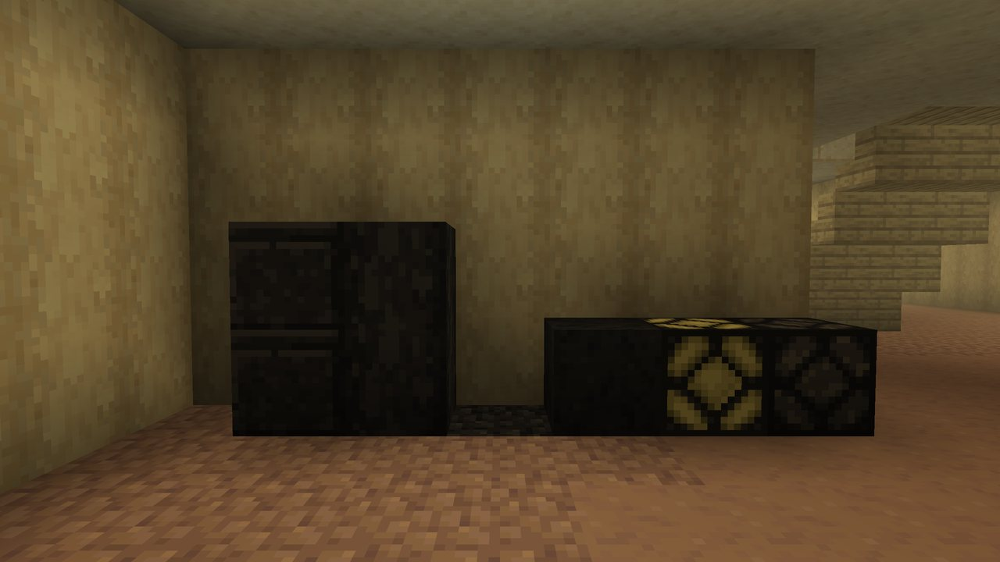
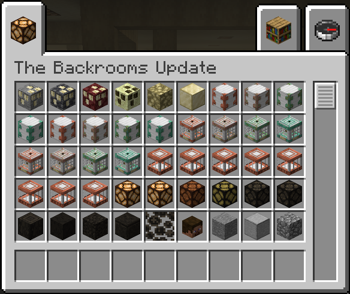

Home » Reference » Items and blocks
Items and blocks
Everything the mod adds, with what it does and where to get it. Recipes are on the Crafting page.
Memarium#
Memarium Ore
Found only in The Remembering, where ore used to be. Also Deepslate, Nether and End kinds.
Raw Memarium
Dropped by Memarium ore. Smelts into an ingot; also the first step of every insanity potion.
Memarium Ingot
Used for Memarium gear, the Memory Anchor, the Stand-In, and as fuel for the Memento and Snapshot.
Block of Memarium
Nine ingots. Five of them make the body of the Shape that pins the Keeper.
Block of Raw Memarium
Nine Raw Memarium.
Remembered Upgrade
The smithing template that turns diamond gear into Memarium gear. Can be duplicated with diamonds and a Memarium Ingot.

Memarium tools#
Sword, pickaxe, axe, shovel and hoe: a diamond tool, a Remembered Upgrade and a Memarium Ingot at a smithing table (recipes). Diamond's speed and damage, netherite's durability (2031). Inside The Remembering they are the only tools that cut copies at normal speed; outside they mine at 18% speed and wear 5 extra per block. See Rules.
Memarium Sword
Damage like diamond.
Memarium Pickaxe
The key to The Remembering.
Memarium Axe
Also scrapes copper off Reinforced Iron.
Memarium Shovel
For the mud and mushroom floors.
Memarium Hoe
For completeness.
Where to find a Remembered Upgrade:
- One in the machine hall chest of every Buried Works, every time, beside the four Reinforced Iron.
- The Buried Works archive chests: one chest in three.
- In The Remembering, chests in remembered rooms and in the refuges that come in groups: 9% per chest.
- Then copy it at a crafting table with diamonds and a Memarium Ingot (recipe).
Memarium armor#
Helmet, chestplate, leggings and boots, made like the tools from diamond pieces. A little better than netherite everywhere, and much better inside The Remembering.
| Netherite | Memarium | Memarium inside The Remembering | |
|---|---|---|---|
| Armor (helmet / chest / legs / boots) | 3 / 8 / 6 / 3 | 3 / 9 / 7 / 3 | same |
| Toughness per piece | 3 | 3.5 | 5.5 |
| Knockback resistance per piece | 0.1 | 0.1 | 0.25 (a full set cannot be knocked back) |
| Damage taken | 100% | 100% | 93% per piece (a full set takes 75%) |
| Durability (helmet / chest / legs / boots) | 407 / 592 / 555 / 481 | 462 / 672 / 630 / 546 | same |
| Enchantability | 15 | 18 | same |
| Fire resistant | yes | yes | yes |
A full set is 22 armor and 14 toughness outside (netherite: 20 and 12), and 22 and 22 inside. The bonus inside stops the moment you leave, take a piece off or die. Memarium is also an armor trim material.
Memory items#
Settled Heart#
Settled Heart
Dropped by the Keeper when he is beaten, one for everyone in the fight, even a fighter who never landed a hit. The middle of the Memento and Snapshot recipes.
Each heart is kept for its own fighter while they are still around (online, in The Remembering and within 64 blocks), for up to a minute, so whoever stands on the drop can't take everyone's. A heart whose fighter left or went far off is anyone's after 3 seconds. Hearts never come out inside or behind a wall. See Beating him.
Memento#
Memento
Give it your inventory, and take it back later. Whatever you carry then is left behind in The Remembering.
- Use an empty Memento: it costs one Memarium Ingot and stores everything you carry, armor included.
- Use it again to get it all back. Whatever you were carrying at that moment is dropped in The Remembering, at the same spot (or the nearest floor). The advancement is A Fair Trade.
- Crafted from a compass, a Settled Heart and an ender pearl in a row (recipe). Never found in chests.
Snapshot#
Snapshot
Remember a build, and put back whatever goes missing. It fades with time.
- Sneak and use it on two opposite corners to save a build, up to 16 by 16 by 16.
- Later, use it on any block there to put back what is missing. It takes the blocks from your inventory and one Memarium Ingot, and the Snapshot is used up. It only works in the dimension it was taken in.
- After the first in-game day it starts to fade: more and more of what it puts back comes back plainer, or not at all.
- Wash it clean in a water cauldron. The advancement is Hold Still.
- Crafted from a map, a Settled Heart and an ender pearl in a row (recipe).

Memory Anchor#
Memory Anchor
While it has a redstone signal, no thin spot forms anywhere in the world, and the ones out there close back into the blocks they replaced. Its crystal turns while powered.
Memarium Ingots in the corners, Blocks of Redstone on the edges and an End Crystal in the middle (recipe). It weathers like copper; wax it to keep its look, and a mined anchor keeps its stage and wax. Powering one gives Hold On.
Stand-In#
Stand-In
The Remembering's respawn anchor. Charge it with Raw Memarium, set your spawn, and it keeps your likeness.
- Raw Memarium charges it, up to 4. Its light and its comparator signal climb with the charge, like a respawn anchor's.
- Use it with a charge in it: your respawn point is set there and the advancement is Someone to Come Back To. Your head, washed grey, turns inside the cage.
- Empty, it is silent and does nothing.
- Every respawn at it spends one charge. You come back standing beside it. With no charge left, or if it is gone, you go back to world spawn.
- Only in The Remembering. Anywhere else: "It doesn't remember this place."
- The copper weathers in four stages. Wax it with honeycomb, scrape it with an axe. A mined Stand-In keeps its stage and wax.
- Mine it with any pickaxe. Copper, Memarium and iron ingots around an armor stand (recipe).


Door blocks#
Reinforced Iron
The door frame. Weathers like copper. Breaks into 2 iron, 2 copper and sometimes a block of iron.
Gateway
The open door itself. Not an item: it fills the opening of a powered frame.
Everything about doors is on Getting In.
Lamps#
Three redstone lamps that need no power, with the plain vanilla redstone lamp look: the Stuck Lamp (always lit), the Flickering Lamp (lit, flickers when players are near) and the Burnt-Out Lamp (always dark). They light the ceilings of The Remembering. As blocks they are in the creative tab, and a Memarium tool now and then gets one out of a ceiling.
Settled blocks#
The office blocks gone the Keeper's brown-black (walls, floors, ceilings and lamps), found in the rare settled patches. Memarium tools always get them (and the lichen) when they break them.

Settled Birch
Settled stripped birch, the walls.

Settled Mushroom
A settled mushroom-block floor.

Settled Mud
A settled packed-mud floor.

Settled Sandstone
The settled cut sandstone ceiling, black, with the cut band on its sides.
Settled Flickering Lamp
Dim, and flickers more than the others. Also the Settled Stuck Lamp and Settled Burnt-out Lamp.
Settled Lichen
Grows on any side of any block, like sculk vein. Drops itself without Silk Touch.

Collectibles#
Doorway Pottery Sherd
Archaeology in the Buried Works; storeroom chests.
Lamp Pottery Sherd
Archaeology in the Buried Works; storeroom chests.
Pit Pottery Sherd
Archaeology in the Buried Works; archive chests.
Copy Pottery Sherd
Archaeology in the Buried Works; archive chests.
Builder Armor Trim
An armor trim pattern from the Buried Works. Duplicate it with diamonds and a Reinforced Iron.
Music Disc: Day One
An original track, 1 minute 49. Brushed from the gravel at the Buried Works, rarely from inside. A Vivid Ghast killed by a player drops one 5% of the time, plus 2% for each level of Looting.
- The Shape painting (3 by 3, by The Builders) shows how to pin the Keeper. It can come up when you place any painting.
- Still Life Head: dropped by a Still Life when you take off its last limb. It wears the copied player's real skin, on the ground, in your hand and inventory and placed, and keeps it through placing and breaking. It can go on a wall, and is the head of the Shape.
- Old blocks: 29 blocks with a pre-1.14 look (Old Stone, Old Cobblestone, Old Bricks and so on) from pockets in the geometric level. They use your own Programmer Art pack's textures.
- Spawn eggs for the Keeper, the Still Life and every Vivid and Hollow mob (creative only).
Enchantments#
Four treasure enchantments, found as enchanted books in The Remembering's chests (and now and then in a Buried Works archive chest):
| Enchantment | Goes on | Levels | What it does |
|---|---|---|---|
| Keeping | Anything that can be enchanted | I | The item stays with you when you die. |
| Stillness | Leggings | I to III | While you stand still or crouch, the Keeper only notices you within 20 / 14 / 8 blocks. |
| Slow Fall | Boots | I to II | Lower gravity (25% / 45% less) and 3 / 6 more blocks of safe fall. |
| Curse of Fading | Anything that can be enchanted | I | A curse: the item is gone when its holder leaves The Remembering. |
The creative tab#
Everything in the mod is in its own creative tab, The Backrooms Update.
